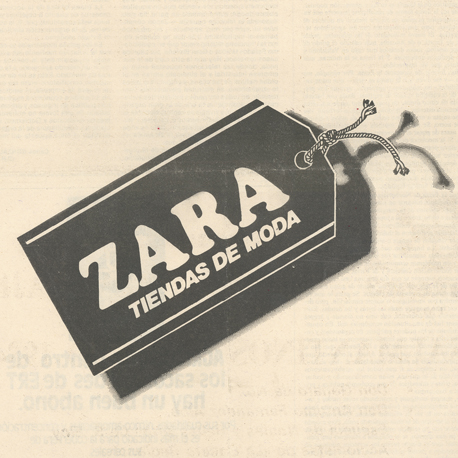
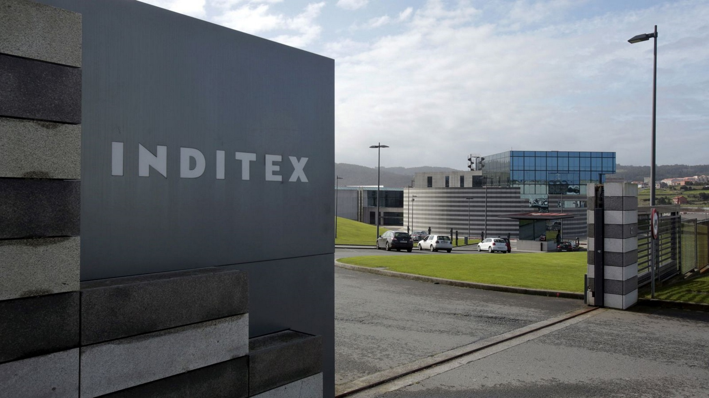

Información sobre la empresa
Industria de Diseño Textil, S. A., más conocida por su acrónimo Inditex,
es una empresa multinacional española de fabricación y distribución textil.
Tiene su sede central en el Polígono Industrial de Sabón, en Arteijo (La Coruña), España.
Su creador es Amancio Ortega y está compuesto por ocho grupos afiliados.
Sus orígenes
A los trece años de edad, el fundador de Inditex, Amancio Ortega, comenzó a trabajar en una tienda de ropa
en la ciudad de La Coruña, España y en 1963 fundó una empresa dedicada a la fabricación de prendas de vestir.
Ortega empezó a desarrollar sus propios diseños y junto con su primera esposa, Rosalía Mera comenzó a hacer
la ropa desde su casa. En el comienzo, operaba como fabricante de prendas de vestir bajo el nombre de
Confecciones Goa.
No fue, sin embargo, hasta 1975 cuando abrió la primera tienda bajo la denominación Zara en una céntrica calle de La Coruña, España en la calle de Juan Flórez. El éxito impulsó a Ortega en 1977 a instalar sus primeras fábricas de Zara en Arteijo (La Coruña), donde actualmente reside la sede del Grupo Inditex. Durante los años siguientes, la cadena se extiende rápidamente por toda España. En 1978 se abrió una tienda en Ponferrada (León) España, la primera fuera de Galicia, España.

Acualidad
2001 se convierte en un año importante para el grupo y con la salida a bolsa del Grupo Inditex el 23 de mayo por un valor
total de un billón de pesetas.1011 Inditex ha multiplicado por más de cinco su capitalización bursátil, ya que debutó en el
mercado a 18,25 euros, y apenas dos meses después, en julio, el grupo se incorporaba al selectivo español.
En el mismo año, la empresa lanzó una tienda de ropa interior femenina llamada Oysho. En 2003, fue abierta Zara Home y en el
segundo semestre del año 2008, Uterqüe fue la última cadena de tiendas exclusivas abierta por el grupo.1011En 2005, el actual
Presidente Ejecutivo Pablo Isla era consejero delegado de Inditex.14 Fue en 2011 cuando Ortega, fundador y principal accionista,
renunció al cargo de presidente y el jefe ejecutivo Pablo Isla pasó a ser presidente de la compañía.
En 2015, las aperturas netas de la compañía se situaron en 330, alcanzando al cierre del ejercicio un total de 7420 tiendas en
88 mercados.
El 30 de noviembre de 2021, el Grupo Inditex anunció que su Consejo de Administración había nombrado a Marta Ortega Pérez como
la nueva presidente de Inditex en sustitución de Pablo Isla, haciéndose efectivo el relevo a partir del 1 de abril de 2022.

Marcas afiliadas
- Uterqüe
- Massimo Dutti
- Zara
- Stradivarius
- Pull & Bear
- Bershka
- Zara Home